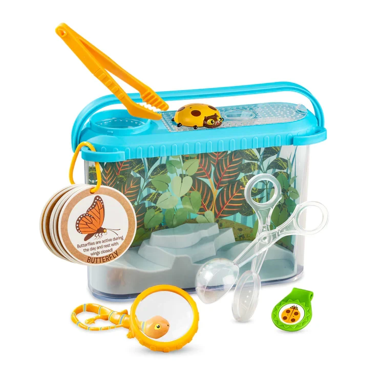
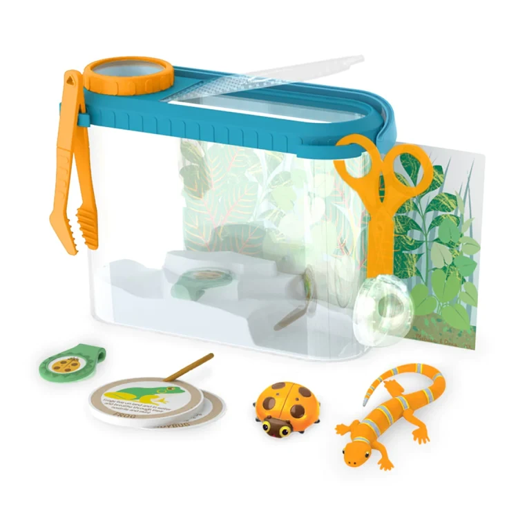
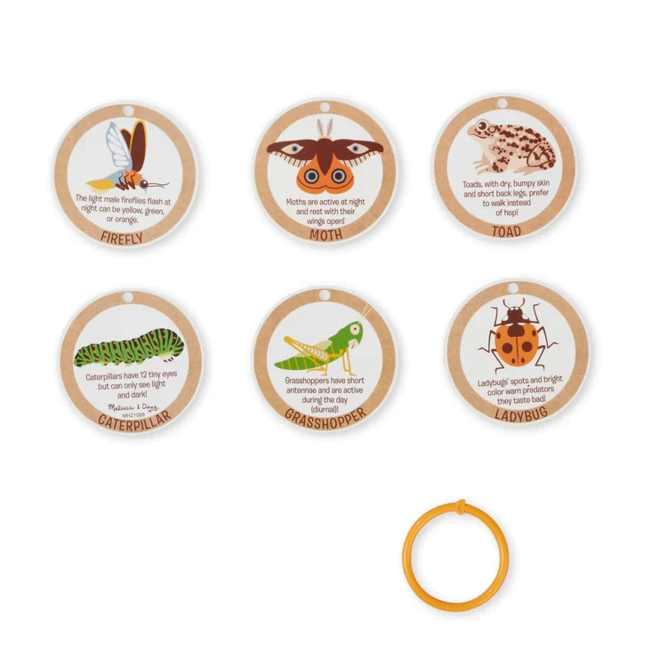
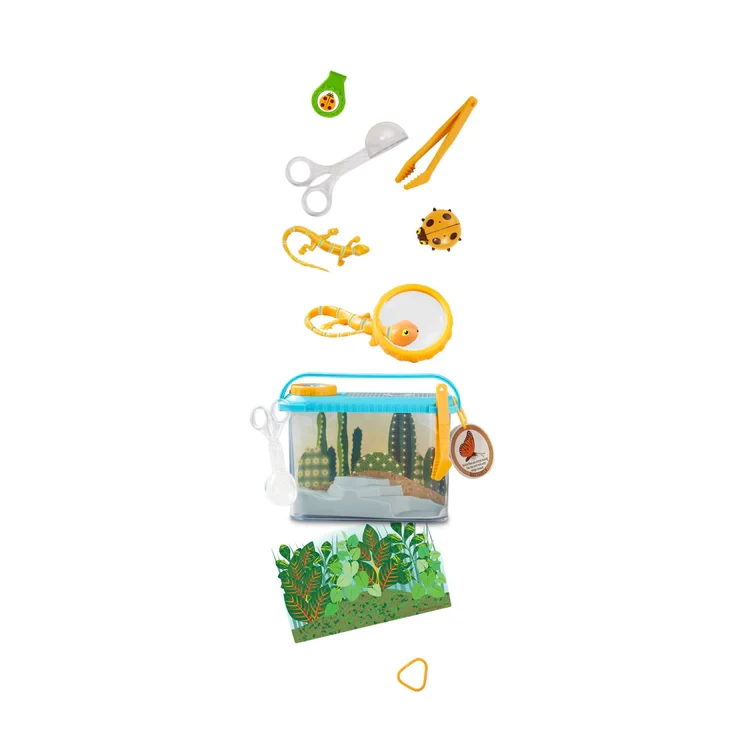
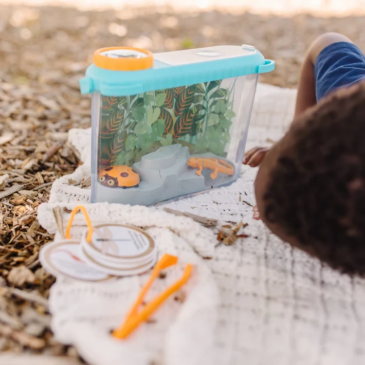
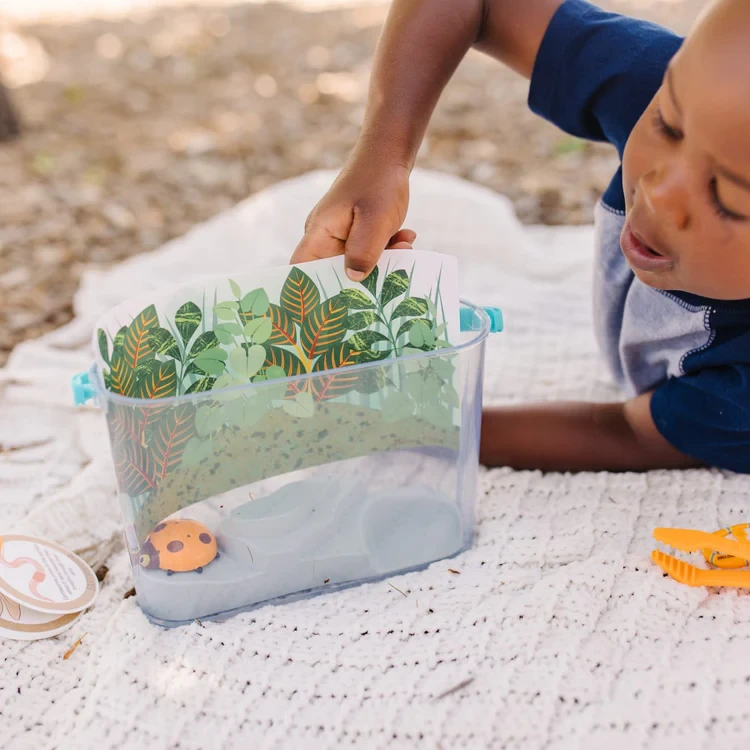
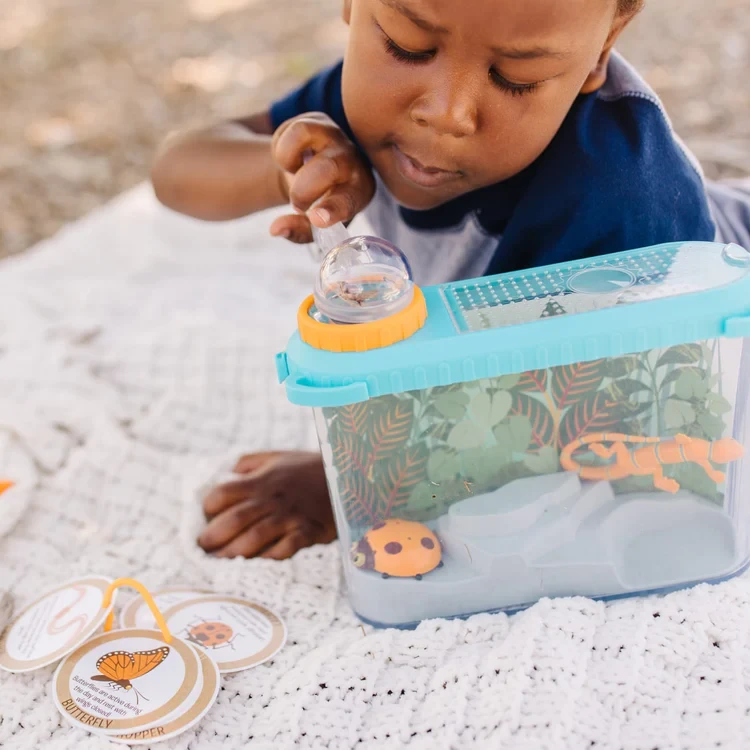

Let’s Explore Terrarium Observation Play Set
Vehicles
R525Collect, make a home for, and observe real or pretend critters that swim, crawl, and fly with this 16-piece terrarium play setTerrarium includes lid with snap-on magnifier, built-in handle with clips to hold ID cards and tools, removable molded base, double-sided background card; can hold water, dirt, or sandPlay set includes scooper and tweezers for critter collecting, 2 play critters to encourage imaginative play, 6 double-sided ID cards, collectible medallionLet's Explore by Melissa & Doug encourages kids to connect with the natural world through imaginative play, and to discover the joy of outdoor adventures that instill curiosity and confidence while inspiring them to say,
Enquire about this product







Let’s Explore Terrarium Observation Play Set at Kids Corner KZN
Let’s Explore Terrarium Observation Play Set is part of our Vehicles collection. Kids Corner KZN stocks toys for learning, pretend play, creative play, gifting and everyday childhood discovery in South Africa.
Browse more Vehicles toys